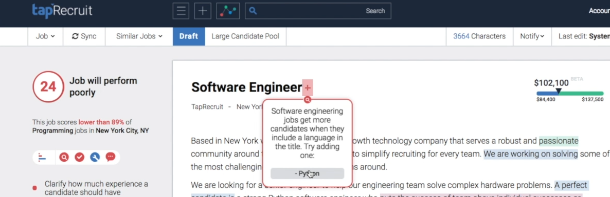
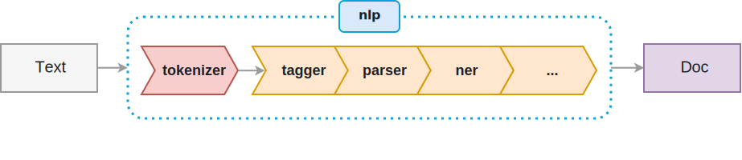

Rules, Pipelines and Models
Over the past decade deep neural networks have revolutionised dealing with unstructured data. Problems like identifying what objects are in a video through generating realistic text to translating speech between languages that were intractable are now used in real-time production systems. You might think that today all problems on text, audio an images should be solved by training end-to-end neural networks. However rules and pipelines are still extremely valuable in building systems, and can leverage the information extracted from the black-box neural networks.
Media coverage in natural language processing focuses on the new massive models like BERT, GPT-2 and Turing-NLG trained using tens of thousands of GPU hours on massive web crawls. This kind of hype made me think that training a single deep neural network, with the right architecture, is the right solution for almost any supervised learning problem. However there’s lots of good reasons to also use interpretable handcrafted rules, simpler models and pipelines.
Informing decisions
The primary value in any model is to help make a decision, by better understanding the consequences of different decisions. A black box model used on unstructured data may make a prediction without guiding what action needs to be taken.
Consider the task of writing a job advertisement; you want to write it in such a way that the people you want to hire will apply while maintaining a diverse candidate pool. Suppose you could track how many good candidates applied for a large number of different advertisements, then you could build a Transformer to predict the number of good candidates that will apply given the job ad text.
Then to write a good job ad you could try many different variations of the ad and see what optimises the score. However this approach is very time consuming for the person writing the job ad, and you may not even think of the types of changes that will improve the job ad. Moreover it’s not clear how much of score is real signal versus random noise in the model.
Perhaps you could implement lime to see which words in the text have the most impact on the score. Highlighting those words could help direct your attention to where the ad needs to be edited. Unfortunately improving a job advertisement is rarely as simple as deleting a few words in isolation, which are the kinds of suggestions lime makes by default.
So maybe you use the language model from your Transformer to rewrite the sentences and rescore it (like a more sophisticated lime), and make the suggestions that would improve the job the most. Even if we can generate text that is reasonable and the predictions don’t overfit to noise (making random suggestions), they may start suggesting things that you can’t or don’t want to change. Maybe it will suggest changing your company name to Google (their jobs get a lot of applicants), or increasing the salary significantly, or maybe even chaning the kind of role you’re hiring for! As the ad is changed the definition of a “good candidate” might change (maybe writing the ad a certain way indicates you have lower expectations) so it may no longer be meeting your objective.
A different, more tractable, approach is to implement a bunch of rules like Taprecruit does:

It seems like Taprecruit has a list of different rules of things that will strongly impact the number of candidates that apply and the gender balance. It then directly makes recommendations based on these rules like “add a programming language to a Software Engineer job title”. Under the hood there could be some sophisticated models to detect when the rules apply, what suggestions to make, and to give overall scores.
The rule based strategy lets you suggest the kinds of changes hirers will make, and those that you have strong evidence that will make an impact based on expertise, independent research, or modelling. It also lets you explain the suggestions in context which makes them more likely to be adopted. You may miss some things that a black box model will find, but the rules approach leads to a product that can actually help a hirer. The management of creating hundreds of these sorts of rules has a much better payoff than trying to build a complex neural network that adheres to many subtle constraints.
Adding real world knowledge
Another benefit of rule based approaches is they let you add real world knowledge which can improve data efficiency, or even encode things that can’t be seen in the model. In the job advertisement example the model may not have known what changes a hirer would make when writing an ad (and obtaining this data might be very expensive), but a knowledgeable human might be able to hypothesise and collect qualitative data to support this. Adding this real world knowledge can make models much more effective and simple to implement.
As a simple example if you wanted to extract human readable dates (like “5th of April, 2020”) you could get dates annotated in thousands of documents and build a complex machine learning model to tag the spans of text. You could even go a step further and train it to output the year, month and day; although I’d worry whether it generalises well to years not in the training set! Or you could do what dateparser does and just list out the most common ways of writing dates. You could then do lots of different testing to capture most of the variants and implement a high precision date extractor that’s easy to maintain fairly quickly. Moreover this approach will operate orders of magnitude faster than the neural network, with higher reliability.
Existing tools are far cheaper
When there’s an existing tool that can do the job it will often be orders of magnitude cheaper to implement, operate, and maintain (which often makes more things worth doing) and may just perform better in general. To build a supervised model you need sufficiently many labelled data of a high enough quality, and it can be a challenge to choose the right model architecture, train it and debug any issues.
In the date parser example it was much cheaper and faster to build the rules, but it’s also very unlikely to give unexpected results. Even Google’s high profile language translator gives very unusual results that are hard to interpret with data far out of the training set.

These kinds of issues are notoriously hard to debug and fix in neural networks; whereas rules are much easier to trace and amend.
When Dropbox created an application to extract text from uploaded documents they used a deep neural network to convert images of words to text. However they didn’t use the same neural network to detect the words in the image, instead using an algorithm called Maximally stable extremal regions (MSER). It wasn’t clear that training an image detector for words would work well with hundreds to thousands of words in a document. However MSER works very well, there’s an existing fast implementation in OpenCV, and is easy to debug and fix issues. The pipeline of MSER and a neural network image-to-text converter was right for their application.
Modularity
Instead of having a single end-to-end model you can have multiple pieces in a pipeline that fit together and can be reused for different applications. For Dropbox’s text extractor they could use the off-the-shelf MSER algorithm, and if they found a better algorithm they could replace it with minimal impact on the image-to-text converter. This kind of technique is very common in natural language processing where there is a long history of using pipelines to get useful features out of text.
The spaCy library implements this kind of pipeline where it tokenizes the text (splitting the text into words), tags the parts of speech (like nouns and verbs), parses the dependencies (like saying which noun a verb refers to) and performs Named Entity Recognition (finding names of people, places, times).

There’s a great example from Ines Montani on how you could use this to extract sales figures from earning’s reports. You could use the entity recogniser to find company names and money, and text matching to find dates (like Q2 2018) then writing rules with the dependency parser to find the relations between money figures, dates and company names. Text classification could be used to help find the relevant sentences, or to tag whole paragraphs based on the header, to help make the process faster with less false positives. While perhaps you could build a deep neural network to do this, it would require a lot of annotation, experimentation with models, expensive equipment, and may just not work.
However there is one big drawback to pipelines; they’re only as good as their weakest component. If the tokenizer fails (maybe because of some special character or stray HTML tag), then the part of speech tagger, dependency parser and named entity recogniser will all do poorly. This means you may have to do some analysis and improvements for each component to work really well on your data (maybe writing a custom tokeniser or retraining the dependency parser). The upside of this is it is normally easy to see where your pipeline breaks down and how to fix it; when a black box model performing a complex task doesn’t work it can be incredibly hard to understand why and how to fix it.
Pipelines of models and rules
Advances in deep learning have made whole new things feasible in fields like object detection and automatic translation and transcription. However deep learning models are expensive to annotate for, train, operate and debug, and it’s not clear upfront whether they will succeed at complex end-to-end tasks. A very promising approach is to combine these deep learning models with existing techniques like rules, algorithms and simpler machine learning models, to attach complex tasks. When Google put BERT into search results they used it to augment their results for complex search phrases, not to replace their existing well-functioning search algorithm.
Breaking a complex task into steps makes it much easier to obtain reusable components that can be built or bought and optimised separately. This is as true in systems using machine learning as it is for general software engineering. While there are some cases where an end-to-end deep learning model is the right solution, it’s rarely the place to start.